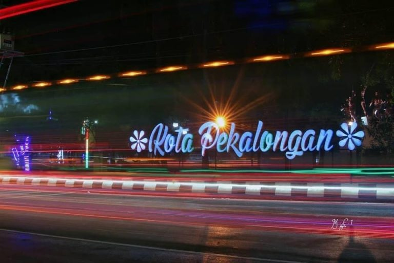

Sejarah

Nama Kota Pekalongan (Gemeente Pekalongan) dapat ditelusuri pada arsip dokumen Keputusan Pemerintah Hindia Belanda (Gouvernements Besluit) Nomor 40 tahun 1931. Nama Pekalongan diambil dari kosakata bahasa Jawa 'Along' (dapat banyak) dan di bawah lambang kota tertulis 'Pek-along-an'. Hal ini diikuti dengan keputusan DPRD Kota Besar Pekalongan tanggal 29 Januari 1957 dan tambahan Lembaran Daerah Swatantra Tingkat I Jawa Tengah tanggal 15 Desember 1958, serta persetujuan Pepekupeda Teritorium 4 dengan SK Nomor KTPS-PPD/00351/II/1958 yang menyatakan bahwa nama Pekalongan berasal dari kata
'Pek-Along-An' yang berarti pendapatan atau dalam bahasa Jawa Krama disebut dengan 'Pangangsalan'.
Pada pertengahan abad ke-19 di kalangan kaum liberal Belanda muncul pemikiran etis, yang selanjutnya dikenal sebagai politik etis, yang menyerukan Program Desentralisasi Kekuasaan Administratif yang memberikan hak otonomi kepada setiap
Karesidenan dan Kota Besar serta pembentukan dewan-dewan daerah di wilayah administratif tersebut..
Geografis
Kota Pekalongan membentang antara 6º50’42”–6º55’44” LS dan 109º37’55”–109º42’19” BT. Berdasarkan koordinat fiktifnya, Kota Pekalongan membentang antara 510,00–518,00 km membujur dan 517,75–526,75 km melintang, dimana semuanya merupakan daerah datar, tidak ada daerah dengan kemiringan yang curam, terdiri dari tanah kering 67,48% Ha dan tanah sawah 32,53%
Berdasarkan jenis tanahnya, di Kota Pekalongan memiliki jenis tanah yang berwarna
agak kelabu dengan jenis aluvial kelabu kekuningan dan aluvial yohidromorf. Jarak terjauh dari Utara ke Selatan mencapai ± 9 km, sedangkan dari Barat ke Timur mencapai ± 7 km.
Wisata
Kota Pekalongan dikenal akan batiknya yang telah mendunia, banyak wisatawan yang datang atau sekedar singgah di Kota Pekalongan. Tempat wisata di Kota Pekalongan tidak hanya wisata batik saja,
tetapi terdapat juga wisata keagamaan, sejarah dan alam.
Museum Batik Pekalongan
Museum Batik Pekalongan adalah museum batik yang beralamat di Jalan Jetayu No.1 Pekalongan, Jawa Tengah. Museum ini memiliki luas tanah dan bangunan 40 meter persegi dan memiliki 1149 koleksi batik,
antara lain wayang beber dari kain batik yang berusia ratusan tahun dan alat tenun tradisional atau dikenal sebagai alat tenun bukan mesin.Museum Batik Pekalongan merupakan Unit Pelaksana Teknis Daerah (UPTD)
Pantai Pasir Kencana
Pantai Pasir Kencana merupakan tempat wisata pantai kekinian yang lokasinya berada di Kota Pekalongan.Pantai Pasir Kencana mulai dibuka kembali pada bulan Maret 2022 kemarin, dengan mengusung tema wisata buatan kekinian yang menempati luas sekitar 1,5 Hektar.
Pantai Pasir Kencana terkenal akan pesona sunsetnya yang sangat cantik, hal tersebut menjadi daya tarik utama dari pantai hits di Pekalongan ini.
Pengunjung dapat menyaksikan cantiknya matahari terbenam, sambil bercengkrama dan tentunya mengabadikannya menjadi sebuah foto maupun video. Jika cuaca sedang cerah, cantinya sunset akan terpampang secara nyata.